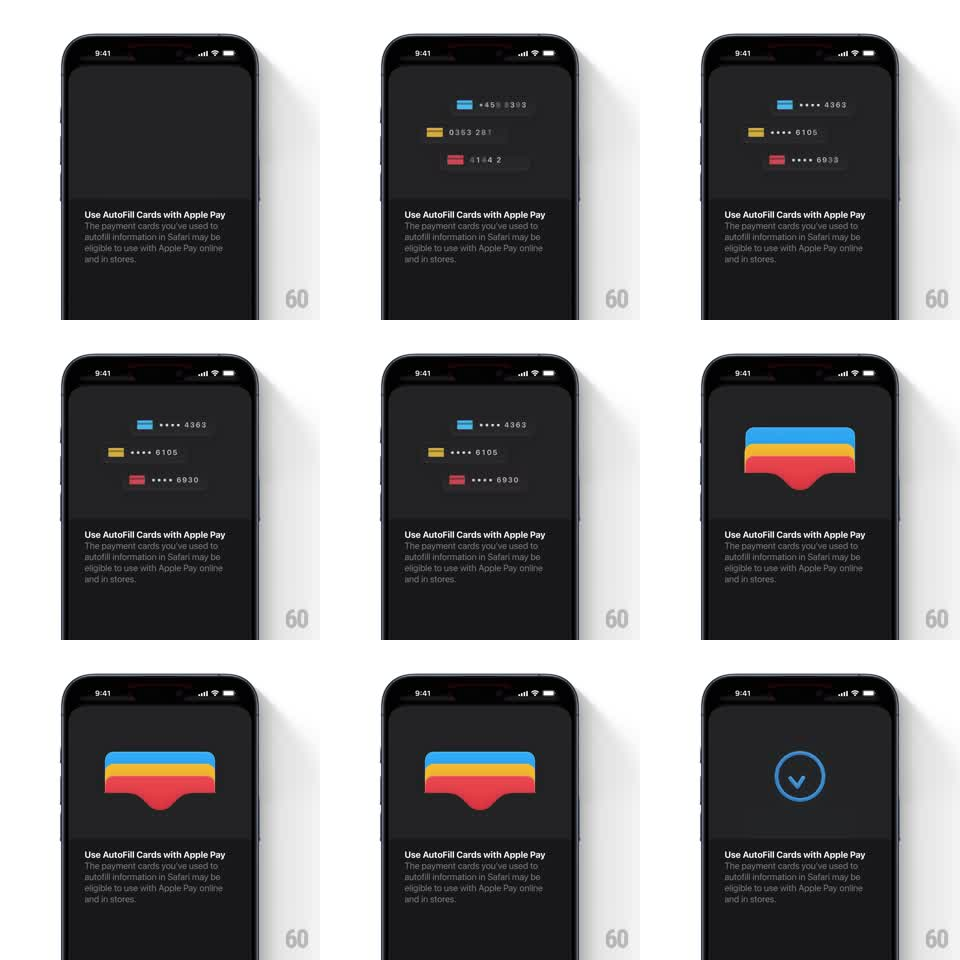

Media
Frame-by-frame

Rebuild this animation 1:1: Apple Wallet's AutoFill intro - three payment card rows appear in sequence, then converge and morph into the stacked Wallet glyph on a dark onboarding sheet.

Rebuild this animation 1:1: Apple Wallet's AutoFill intro - three payment card rows appear in sequence, then converge and morph into the stacked Wallet glyph on a dark onboarding sheet. ## Integration Integration: stack-agnostic spec - springs given as stiffness/damping, timed motions as duration + curve; map every value to your framework and animation library of choice. ## Scene Dark iOS sheet, top area is a stage, bottom holds the copy: "Use AutoFill Cards with Apple Pay" plus the explainer paragraph. On stage: three card rows (blue/teal, yellow, red) each showing a color chip, masked number, and a dark pill backdrop. ## Motion spec Pattern: card rows converge and stack into a single glyph. - The three card rows fade-slide in one by one from the same center slot: first the blue row (fade up 20px, 300ms ease-out), then the yellow row below it (250ms, 150ms later), then the red row (250ms, 150ms after that) - building a vertical list of three. - The list holds for ~600ms, then the rows converge: yellow and red slide up behind the blue row (translate to center, 400ms ease-in-out) while their pills and masked numbers crossfade out (250ms). - The three color chips expand into full rounded card rectangles stacked with a slight fanned offset (each 8px lower and 12px wider than the one above), forming the Wallet stack glyph (400ms, ease-out, small overshoot on the bottom card). - The glyph holds ~800ms, then crossfades to a thin activity ring and a blurred card pill (300ms) - the handoff to the next step. - The copy block below stays static through the whole sequence. ## Calibration - Cards keep Apple's exact stack order: blue on top, yellow middle, red bottom. - The convergence is the signature move - rows must visibly travel, never just fade. ## Reduced motion Rows fade in place; the glyph appears with a single 300ms crossfade. ## Don't miss - Masked numbers use the real format (a colored chip, then four dots, then the last four digits). - The stage background stays pure black - the cards carry all the color.